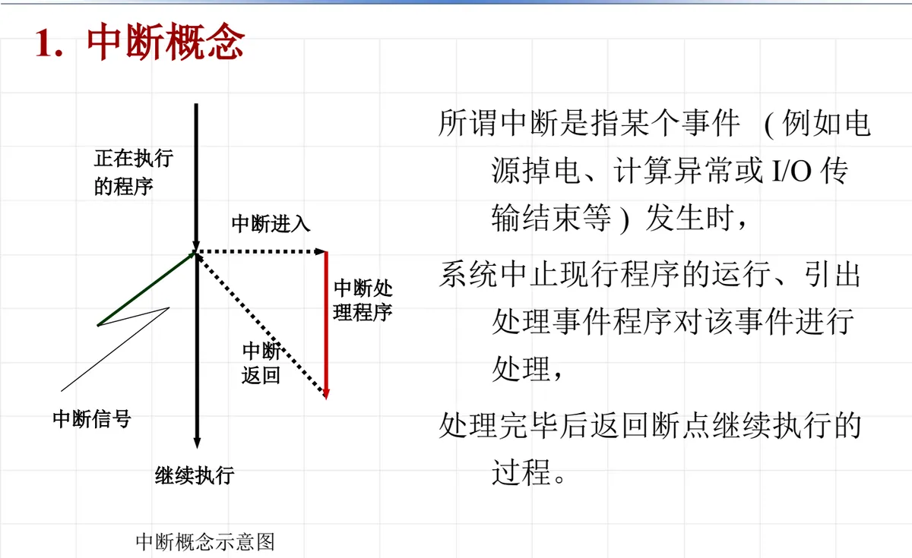
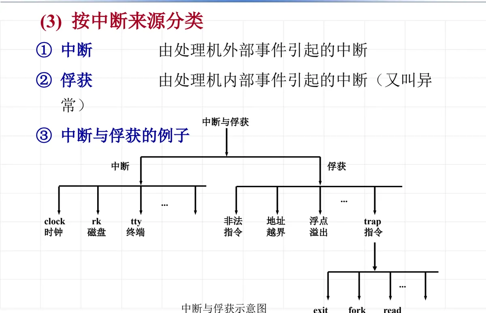
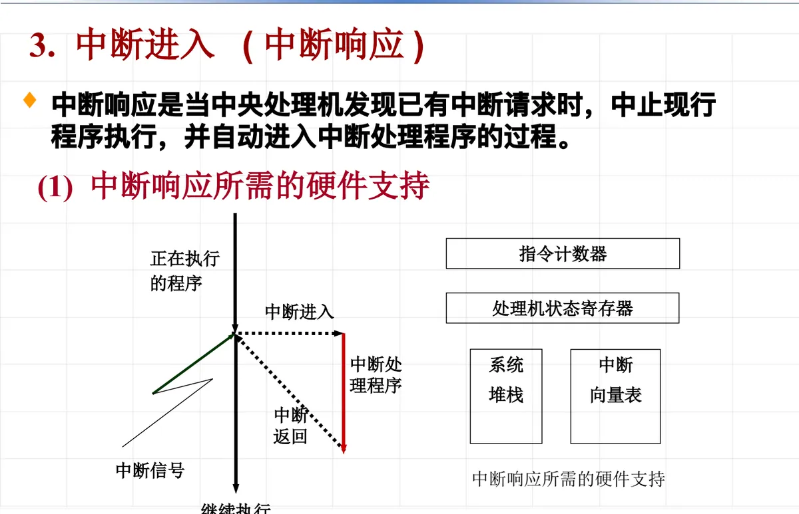
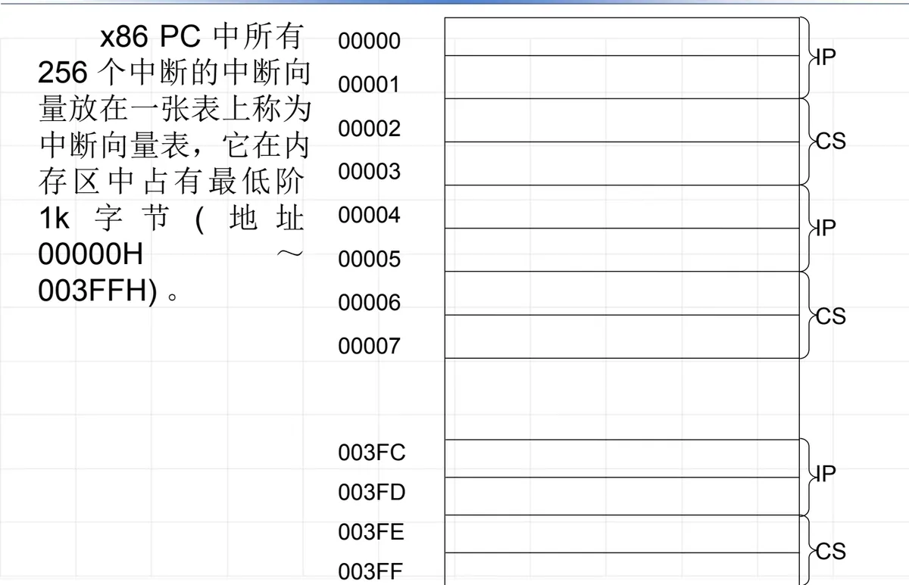
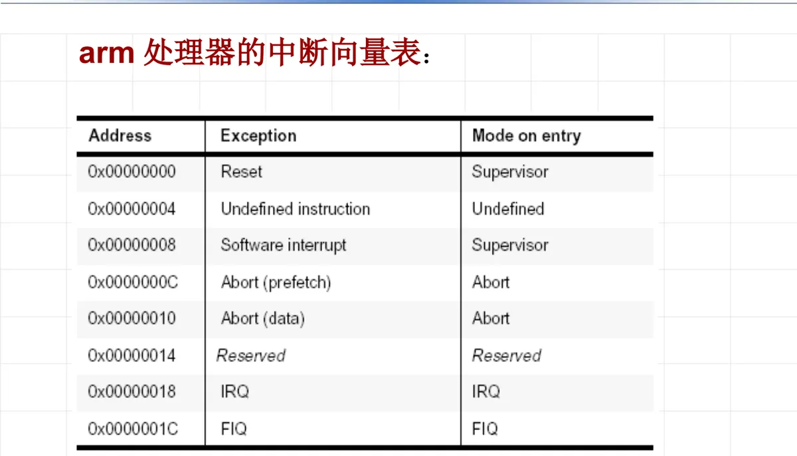
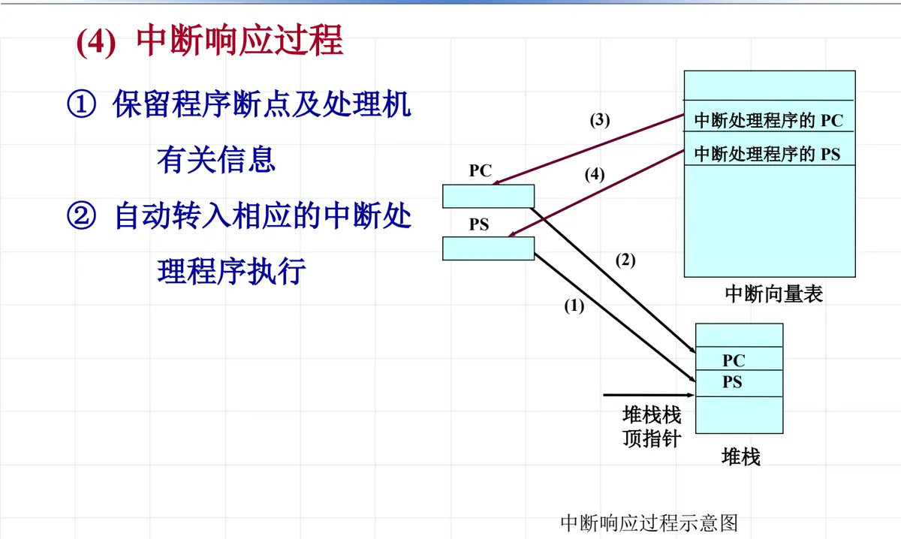
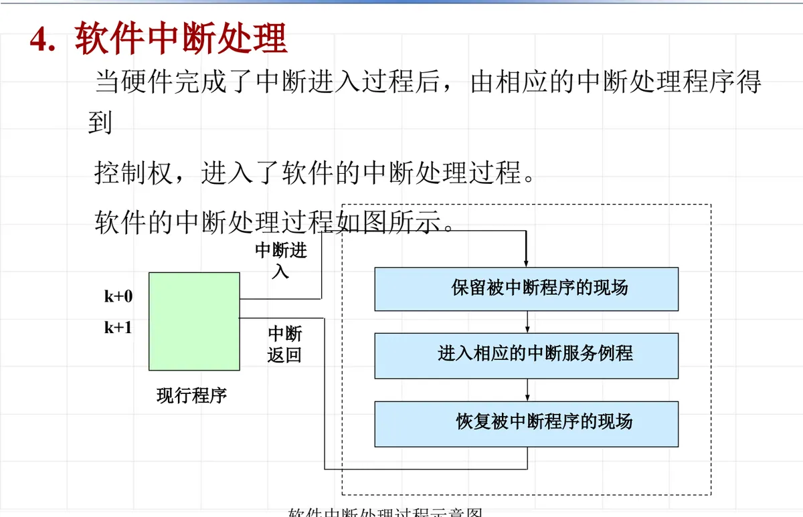

操作系统原理 · 第 2 章 结构与硬件支持
2.5 中断及其处理
上一节说用户态转管态的四条途径里，中断占了三条；这一节就把中断讲透。思路是：先给概念，再按三种口径给中断分类；然后把「中断处理」拆成硬件完成的中断进入和软件完成的中断处理两半，逐一看清硬件要保存什么、软件要保护什么。全节的落点是一句话——中断是操作系统的基础，是实现并发的根本措施。
1. 中断的概念
中断是指某个事件（例如电源掉电、计算异常或 I/O 传输结束等）发生时，系统中止现行程序的运行、引出处理该事件的程序对该事件进行处理，处理完毕后返回断点继续执行的过程。

这个定义里有四个要素：一个事件、中止现行程序、引出处理程序、返回断点继续执行。缺了最后一个，就不叫中断，而叫停机。
2. 中断的类型
（1）按中断功能分类
- 输入输出中断：I/O 传输结束或出错引起的中断；
- 外中断：时钟中断、操作员控制台中断、多核通信等；
- 机器故障中断：电源故障、主存取指令错等；
- 程序性中断：计算异常、用户态下用了核态指令、非法操作等；
- 访管中断：对操作系统提出某种需求时所发出的中断，也就是系统调用引起的中断。
（2）按中断方式分类
- 强迫性中断：不是正在运行的程序所期待的中断，用户程序不可控。输入输出中断、外中断、机器故障中断、程序性中断都属于这一类；
- 自愿中断：是运行程序所期待的事件，典型代表就是访管中断——程序主动请操作系统帮忙。
这一组分类的用处在于区分「意外」与「请求」：强迫性中断随时可能到来，系统必须无条件响应；自愿中断由程序自己发起，何时发生是可预期的。上一节讲的「用户态转管态的四条途径」，正是在这两类之间分布。
（3）按中断来源分类
- 中断：由处理机外部事件引起；
- 俘获：由处理机内部事件引起，又叫异常。

| 来源 | 名称 | 典型例子 |
|---|---|---|
| 处理机外部事件 | 中断 | 时钟（clock）、磁盘（rk）、终端（tty） |
| 处理机内部事件 | 俘获（异常） | 非法指令、地址越界、浮点溢出、trap 指令（exit、fork、read 等系统调用） |
3. 中断过程：硬件与软件的结合
所有计算机系统都采用硬件和软件结合的方法实现中断处理。硬件负责在事件发生时迅速把处理机引到正确的入口，并保存最少量的关键信息；软件（中断处理程序）负责具体的处理事务。下面分两步看：先看硬件完成的中断进入，再看软件完成的中断处理。
4. 中断进入（中断响应）
中断响应是当中央处理机发现已有中断请求时，中止现行程序执行，并自动进入中断处理程序的过程。
（1）中断响应所需的硬件支持
要让这一过程「自动」完成，硬件至少要提供四样东西：
- 指令计数器：记录现行程序的执行位置，以便中断返回时回到断点；
- 处理机状态寄存器：保存处理机当前的状态信息；
- 系统堆栈：中断发生时把断点与状态压入其中；
- 中断向量表：由中断类型直接找到对应中断处理程序的入口。

（2）程序状态字
程序状态字反映指令执行时机器所处的现行状态。它很重要，因此放在特定的寄存器中：PC（指令计数器）与 PS（处理器状态寄存器）。其内容包括：指令地址、指令执行情况、处理机状态、应屏蔽的中断等。
| 平台 | 指令地址部分 | 状态部分 |
|---|---|---|
| x86 PC 机 | CS:IP | FLAGS 标志寄存器 |
| ARM 处理器 | R15（指令计数器） | CPSR 处理器状态寄存器 |
（3）中断向量与中断向量表
- 向量中断：当中断发生时，由中断源自己引导处理机进入中断服务程序，这样的中断过程称为向量中断；
- 中断向量：每个中断类型都有自己的中断向量，其中包含中断服务程序的入口地址；
- 中断向量表：主存中用于存放中断向量（服务地址）的一组存储单元组成的表。
以 x86 PC 为例，所有 256 个中断的中断向量放在一张表上，称为中断向量表，它在内存区中占有最低的 1 KB 字节（地址 00000H～003FFH），每个表项 4 字节，存放中断服务程序的 IP 与 CS。


（4）中断响应过程
硬件的中断响应只做两件事：
- ① 保留程序断点及处理机有关信息；
- ② 自动转入相应的中断处理程序执行。

5. 软件中断处理
当硬件完成了中断进入过程之后，控制权交给相应的中断处理程序。软件要做的事情可以概括为四步：保留被中断程序的现场 → 进入相应的中断服务例程 → 恢复被中断程序的现场 → 中断返回。

（1）保护现场和恢复现场
- 现场：中断返回时能确保程序继续运行的有关信息——除了 PC 和 PS（这两样已由硬件处理），几乎包括其他所有的寄存器；
- 保护现场：当中断发生时，必须立即把现场信息保存在主存中，这一工作称为保护现场；
- 恢复现场：程序重新运行之前，把保留的该程序现场信息从主存中送至相应的指令计数器、通用寄存器或一些特殊的寄存器中，完成这些工作称为恢复现场。
（2）中断处理
现场保护好后，中断服务例程按中断的类别分别处理，课件把它归为四类：硬件故障中断的处理、程序性中断的处理、外部中断事件的处理、外部设备中断的处理。
最后回到本节开头的那句话：中断是操作系统的基础，是实现并发的根本措施。中断是程序得以运行的直接或间接的「向导」，是程序被激活的驱动源；只有透彻了解中断的机理，才能深刻体会操作系统的内在结构。下一节就以 Linux 为例，看特权级和中断处理在真实系统中是怎么实现的。
本节小结
- 中断是某个事件（电源掉电、计算异常、I/O 传输结束等）发生时，系统中止现行程序、引出处理程序处理该事件，处理完毕后返回断点继续执行的过程；
- 按功能分为输入输出中断、外中断、机器故障中断、程序性中断、访管中断；按方式分为强迫性中断（非程序所期待，用户程序不可控）与自愿中断（程序所期待，如访管中断）；按来源分为中断（处理机外部事件）与俘获（处理机内部事件，又叫异常）；
- 中断处理由硬件和软件结合完成：硬件负责中断响应（中断进入），软件负责中断处理与中断返回；
- 中断响应的硬件支持包括指令计数器、处理机状态寄存器、系统堆栈和中断向量表；程序状态字（PC 与 PS）保存指令地址、指令执行情况、处理机状态、应屏蔽的中断等，x86 对应 CS:IP 与 FLAGS，ARM 对应 R15 与 CPSR；
- 中断向量表中每个中断向量包含中断服务程序的入口地址：x86 PC 的 256 个中断向量占据内存最低 1 KB（00000H～003FFH），每项 4 字节（IP 与 CS）；
- 中断响应只做两件事：保留程序断点及处理机有关信息、自动转入相应的中断处理程序；随后由软件保护现场、进入中断服务例程、恢复现场并中断返回；现场是除 PC 和 PS 外几乎所有的寄存器内容；
- 中断处理分四类：硬件故障中断、程序性中断、外部中断事件、外部设备中断；中断是操作系统的基础，是实现并发的根本措施。